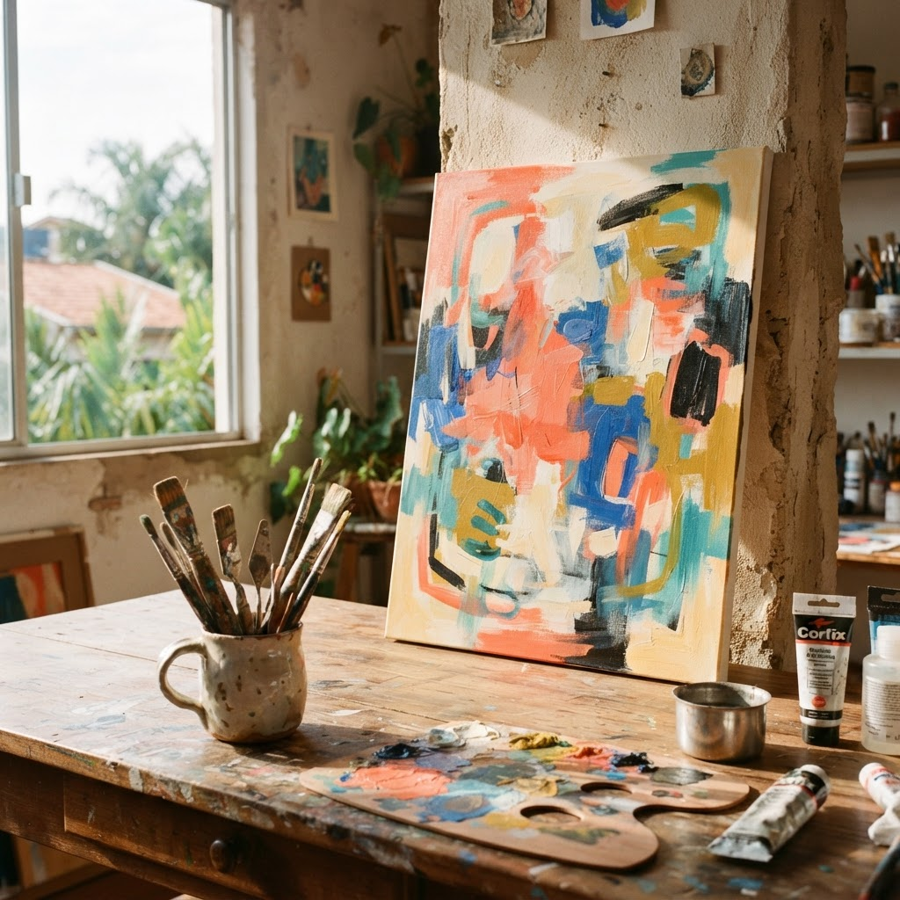
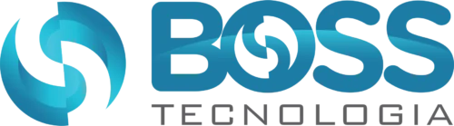
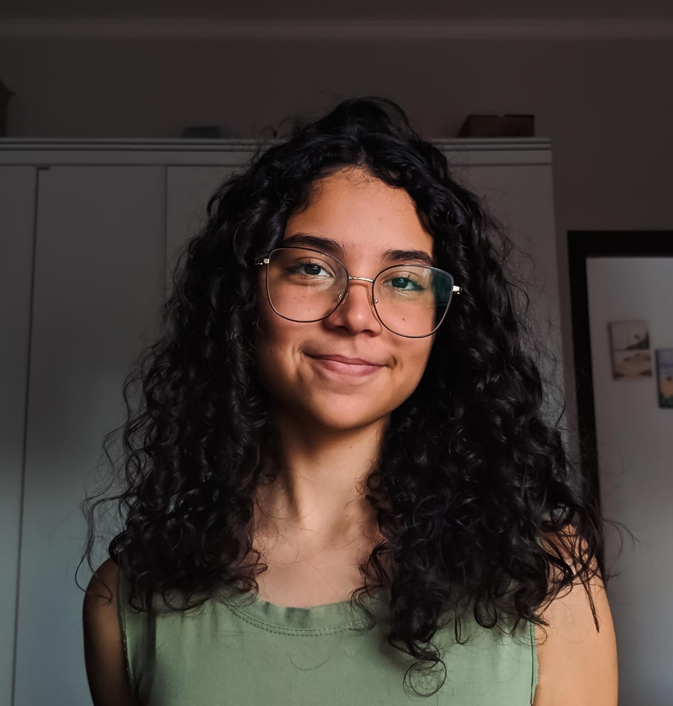
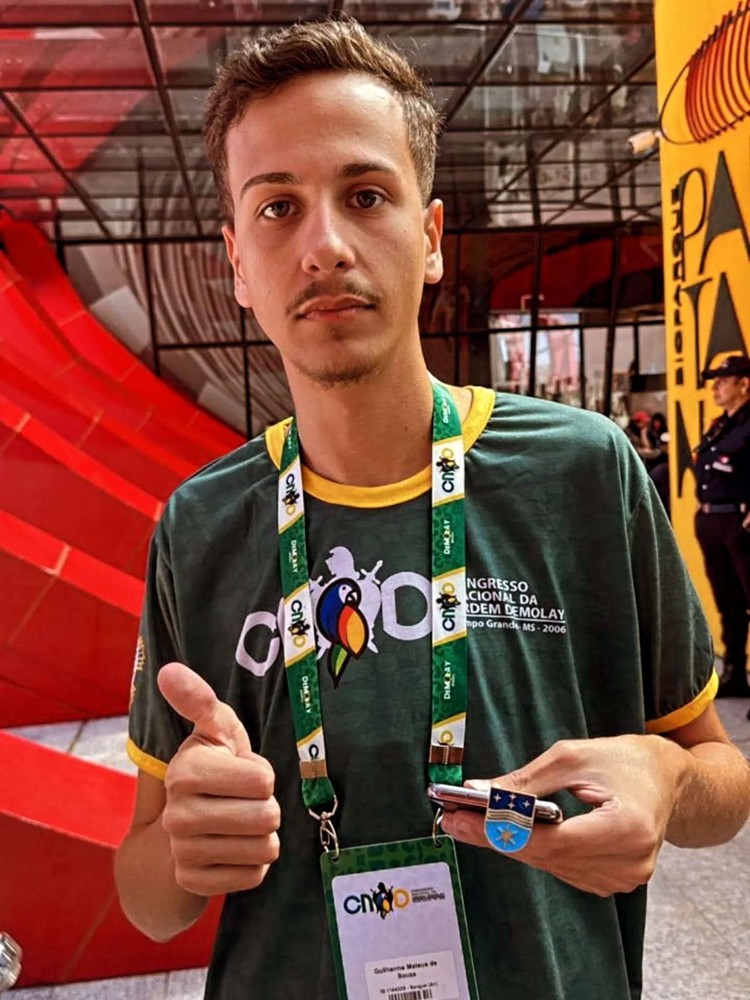
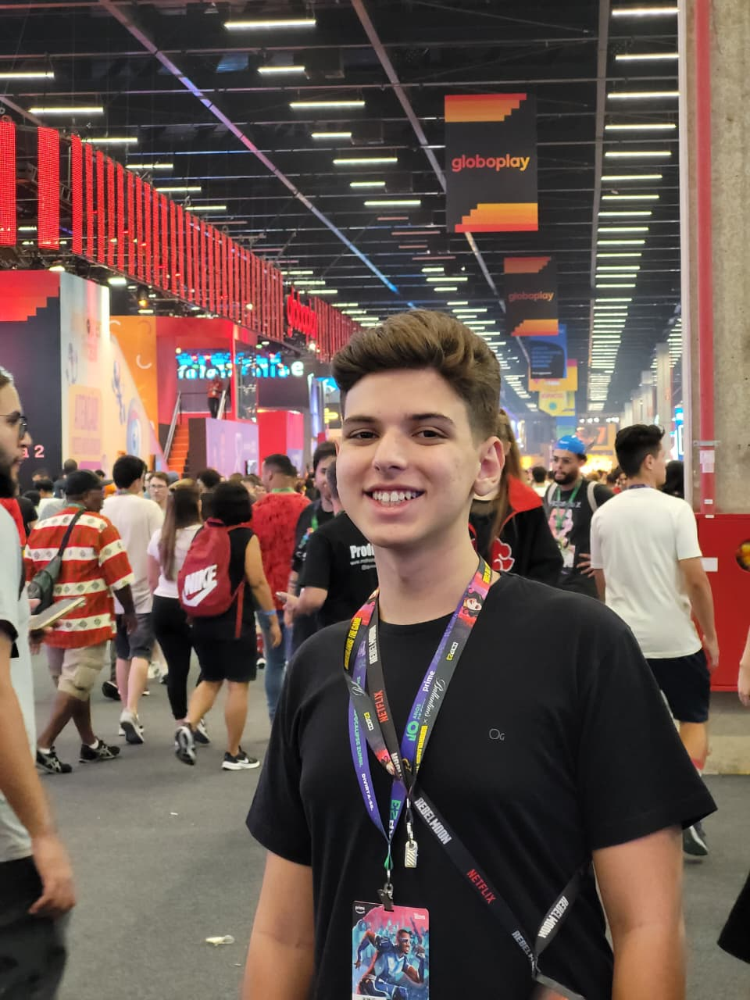

Um projeto acadêmico de desenvolvimento de software do IFSP Campus Catanduva, focado em democratizar o acesso à cultura e valorizar a produção de artes plásticas do município em uma vitrine digital permanente.

Em Catanduva (SP), a produção artística local promovida por entidades municipais, como a Estação Cultural, carece de um espaço permanente para exibição e valorização.
Atualmente, a exposição dessas obras restringe-se a eventos presenciais efêmeros, como a Mostra de Artes Plásticas de Catanduva (MOARC). O projeto Conecta Arte cria um ambiente digital contínuo, democratizando o acesso e fomentando a economia criativa.
Transforma o acervo de artes plásticas em um catálogo digital acessível a qualquer momento pela população.
Conexão direta entre cidadãos e artistas para aquisições e encomendas, sem taxas ou intermediários financeiros.
Apoio presencial para cadastramento de alunos e artistas idosos ou com pouca familiaridade tecnológica.
Integração de disciplinas: Engenharia de Software, Banco de Dados, UI/UX, Acessibilidade e Desenvolvimento Web.
Diretrizes formais estabelecidas na Fase 1 de submissão do projeto de extensão.
Desenvolver e disponibilizar um site web responsivo e acessível para a divulgação dos artistas locais e suas produções.
Cadastrar no mínimo 10 artistas e 20 obras na plataforma (atingindo 25% do contingente da 12ª MOARC de Catanduva).
Disponibilizar perfis com biografia, tempo de atuação, fotos de obras e canais de contato autorizados pelo criador.
Permitir a sinalização de obras disponíveis para compra ou apreciação, sem qualquer intermediação financeira no sistema.
O projeto Conecta Arte integra extensão universitária com a Agenda 2030, gerando impacto cultural e socioeconômico direto em Catanduva.
Oferece aos artistas e artesãos de Catanduva uma vitrine de alcance ampliado no ambiente digital, superando barreiras físicas e gerando oportunidades autônomas de divulgação e contato direto com interessados.
Divulgação sem intermediários: Conexão direta entre comunidade e criador, sem taxas abusivas de plataformas comerciais.
Protagonismo ao artista: Valorização do trabalho manual, de alunos de oficinas e de produtores culturais independentes.
Fortalece a identidade cultural de Catanduva, democratizando o acesso contínuo às artes plásticas e garantindo que o acervo das oficinas municipais permaneça vivo e acessível além das mostras pontuais.
Democratização do acesso: Acervo artístico municipal disponível 24 horas por dia, 100% público e gratuito.
Integração com a cidade: Estreitamento dos laços entre munícipes, Estação Cultural e IFSP Campus Catanduva.
Ecossistema e Parceiros da Proposta

Boss Tecnologia Recursos & DomínioLevantamento de requisitos, arquitetura técnica do software, modelagem de banco de dados e reuniões de alinhamento com a Estação Cultural.
Construção da plataforma web fullstack (Front-End e Back-End), catálogo digital de obras, design responsivo e testes de usabilidade.
Publicação do sistema em produção, capacitação de usuários e apoio presencial para o cadastramento inicial dos artistas e suas obras.
Consolidação dos indicadores de impacto comunitário, apresentação pública dos resultados e entrega do relatório final de extensão.
Estudantes do curso superior de Análise e Desenvolvimento de Sistemas (ADS) do IFSP Campus Catanduva, unindo desenvolvimento de software e impacto comunitário real.

Gestão geral da iniciativa, monitoramento de cronograma, revisão de entregas e condução de reuniões de alinhamento com a equipe e parceiros institucionais.

Articulação direta com a Estação Cultural, Secretaria de Cultura e Ensino Médio Integrado. Coleta de demandas e alinhamento com artistas locais.
Modelagem do banco de dados, desenvolvimento de endpoints de catálogo, filtros de busca, regras de segurança e otimização de infraestrutura.

Criação dos protótipos de alta fidelidade, design de interface responsiva, acessibilidade digital (WCAG) e integração com os serviços de back-end.
Redação formal de requisitos funcionais/não-funcionais, modelagem de Diagramas de Entidade e Relacionamento (DER) e relatórios de extensão.
Estruturação dos relatórios parciais e final de extensão, coleta de evidências visuais e acompanhamento de métricas de impacto comunitário.
Disciplina CTDEXTE 2026.2 — Introdução à Extensão Universitária
Tudo sobre os objetivos, metodologia acadêmica e parcerias do Conecta Arte.
Tem dúvidas sobre a proposta de extensão ou deseja sugerir parcerias? Envie uma mensagem direta para a coordenação!